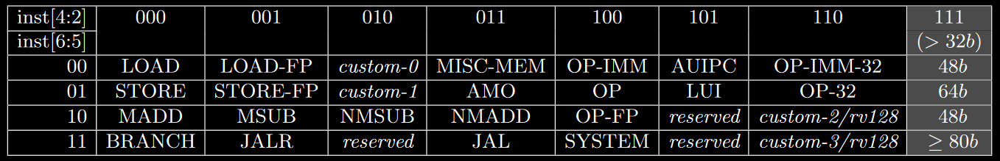

Introduction
Before talking about open hardware, it’s important to understand why the topic has been revived recently and why it might be important from now on. Semiconductors have arguably changed how we live our lives and the transistor is probably the single most important invention humans have ever come up with, moreover, we’ve been constantly making those transistors smaller, reducing costs for existing designs and making it possible for large scale integration to exist within a single extremely complex integrated circuit.

As a result, nearly everything these days relies on electronics in a way or another, and with IoT on the rise, we often see embedded systems in unexpected places such as fridges and ovens.
Naturally, multiple studies are being conducted in order to increase performance, decrease price, make the nodes even smaller, etc. We’ve been seeing companies constantly talking about EUV, 3D stacking and nanowires, but it’s clear that making better nodes has been getting exponentially harder and gains have to be gotten from other sources.
AMD’s Infinity Fabric is an excellent example of clever innovation, monolithic multi-core CPUs can get pretty large nowadays (check the newest Xeons die size or IBM’s POWER9), and the SoCs also have to integrate multiple IPs such as memory controllers, A/V encoders and decoders, I/O controllers, GPUs, NGUs, Camera related circuitry, modems, etc.
The thing is, not every single IP within a modern SoC actually needs the absolute best node, and splitting it into several smaller dies may also significantly improve yields. AMD embraced the multi-die strategy in their first iteration of Zen SKUs, and then went further by manufacturing certain portions of the CPUs at different foundries (TSMC and GlobalFoundries), allowing them to leave performance uncritical parts at an IO die on a bigger node. This also allowed them to reuse the same chiplet silicon across different markets, while its main competitor, Intel, suffered from yields problems with their gigantic dies (Intel has been stuck in their 14nm process for a while, their 10nm efforts haven’t worked out as expected).
Well, parallel computing created an opportunity for CPU designers to keep improving their products, but CPUs are general purpose computing units and any given task has to be broken into smaller instructions. Those operations called instructions are then executed through a pipeline, commanding logical elements such as muxes and ALUs.
General purpose computing is usually great because you can reuse the same processor for an infinite number of processing needs, however, it’s never really the most efficient way of performing a complex task and that’s precisely why we have dedicated hardware for basically anything that’s performance or power critical, GPUs being the most straightforward example (have you ever tried playing games software rendering on your CPU? It might be a cool slideshow experience).
It’s not uncommon nowadays for supercomputers to have more GPUs or FPGAs than CPUs, going with specialised hardware is always better when aiming for maximum performance at a given power envelope, GPGPU has been an excellent field of study simply because GPUs are much better than CPUs at workloads that can be easily parallelised (and many things can!).
CPUs themselves nowadays come with specialised hardware for certain operations, which is the case with AVX instructions for x86 or NEON for ARM. Vector instructions are nothing more than a way to use SIMD operations, extremely useful for concurrent matrix multiplications or anything with a large number of simple mathematical operations, really.
The point I’m trying to make here is reasonably simple, domain-specific architectures are now in demand and we do have the technology to integrate a large number of IPs within the same ASIC. We do not need to rely on the main CPU for everything anymore, we can design accelerators to offload certain important tasks in order to improve performance or efficiency.
Problem is, most CPU cores are closed-source IPs that you can either license or buy an ASIC that incorporates it. ARM, the company responsible for the most successful family of ISAs, doesn’t actually manufacture any of their IPs and while you can get a license to actually modify things or make your own implementation from scratch (like Apple, Marvell, or Fujitsu), doesn’t come cheap.
Open Hardware
Linux created an open-source revolution in the software world by offering a base to build things on top, and nowadays you can find open solutions to basically all of your software infrastructure, including compilers, operating systems, libraries, databases, filesystems, hypervisors, etc. People can more easily innovate because they don’t have to re-implement or reinvent the wheel every single time they want to pursue an idea, they can freely reuse the existing catalog of open-source software and go straight to the point.
The idea of open hardware is allowing engineers to do the same with open-sources IPs, that would create an immense potential for FPGAs utilisation even at home. However, while we do have several standards that facilitate software co-operation and reutilisation (like POSIX and OpenGL), hardware is plagued with proprietary solutions that are usually only fully understood by the responsible company and certainly can’t be easily integrated into someone else’s workflow. IEEE does have a few extremely important standards though (like for floating point) and you should always comply when possible.
Moreover, in recent times we’ve gotten accustomed to hearing about new security flaws found on many out-of-order-execution CPUs with branch prediction (mainly from Intel), and maybe we could’ve been able to realise the problem earlier if the designs themselves were open, making it possible for more engineers to look at it and possibly find something. There’s only so much a single company can do by itself, and it’s undoubtedly easier to find issues when you can get help from others.
With this in mind, I can probably start talking about RISC-V, a modular and royalty-free ISA initially developed at UC Berkeley for their internal endeavours. Or at least that was the plan, until 3rd parties started complaining about changes, then several universities got involved, then companies from the entire semiconductor industry and now the ISA is the current ambassador for open hardware, leapfrogging other alternatives like MIPS, SPARC and OpenRISC.
The momentum behind RISC-V is so tremendous that IBM ended up making POWER, their own ISA, royalty-free. The OpenPower Foundation also joined the Linux Foundation, however that might’ve been a little bit too late.
Why would anyone choose to support RISC-V, a new contender, when alternatives already existed though? You might be asking yourself that, and the answer is pretty simple. The ISA is very well thought. Its modular design allows it to be used in an incredible range of applications, from small and extremely simple IoT edge devices to HPC supercomputers. Its permissive license allows companies to freely do whatever they need with it without creating legal problems and that’s exactly what ends up benefiting everyone.
MIPS has always been a trademark nightmare, and including branch delay slots in the ISA itself isn’t exactly a good decision when you decouple the ISA from implementations, it only makes sense for classic 5-stage pipelines found on simple in-order cores.
SPARC on the other hand, while also royalty-free and widely used in space applications by ESA (see the LEON series of CPU cores) has register windows and that’s a complexity better avoided when designing simple cores.
OpenRISC is licensed under the GPL and that’s probably an issue by itself, however it doesn’t stop there, the ISA does not have a modular design, it doesn’t include shorter instruction encoding (16 bits long, like ARM’s Thumb) and it doesn’t have support for quad FP.
POWER might be a good option due to its time in the market, the software support around it is fantastic when compared to basically any other royalty-free ISA and you can license high performing cores from IBM today. However, it’s an ISA from another era and it’s plagued with numerous complicated extensions, making simple designs somewhat complicated if you want to take advantage of the existing compilers.
That leaves us with a few choices, but for new cores or modifications of existing open-sourced cores RISC-V is currently the best option. There are several implementations that are free to use and modify, including projects from UC Berkeley itself, ETH Zurich, ITT Madras and Western Digital, to give a few examples.
RISC-V
But what, exactly, is an ISA and how can RISC-V be competitive for a wide range of different applications when their computing needs are obviously different? An ISA is the basically the interface between software and hardware, it defines which instructions exist and what their expected output should be, how long they are and how they are encoded, which registers are there for you to access and which one of those you can write to, what happens when there are overflows or when you have to sign extend internal signals, etc.
A high quality ISA simplifies possible implementations because it directly impacts how complex your decoder needs to be and which operations your ALUs should be able to perform. RISC-V’s encodings try to keep similar operands in the same place when they exist within an instruction, the downside being needing different encoding formats for different groups of instructions.
The ISA is divided into base sets and optional extensions, there are 32, 64 and 128 bits versions of the base set (RV32I, RV64I and RV128I), the instructions are encoded into 32 bits and those cover basic operations with integer values, conditional branching, jumping and memory access (loads and stores). Variants with 16 internal general purpose registers instead of 32 are named E (for embedded).
Extensions are responsible for covering everything else, including multiplication, division, user level interrupts, atomics, floating point, 16 bits long encoding (like Thumb), vectors, packed SIMD, etc.
Each extension has a simple “name” that can be added to the base set in order to tell the user it exists in a given implementation, so for example, a 32 bit RISC-V CPU with support for multiplication/division and 16 bits long encoding would have a RV32IMC ISA.
The subset that covers everything usually expected from a general purpose CPU (integer, atomics, FP, CSR access and fencing) is shortened to a single letter, G (ex: RV64GC).
Instructions are grouped into encoding schemes by the kind of operation they perform, and the least significant bits tell the encoder how long the instruction is (in the case there’s support for the C extension).

RV32I has instructions for integer operations between values contained in 2 general purpose registers (R-type), or between one of them and an encoded immediate (I-type).
There are instructions for logic gates, simple arithmetic functions, setting values (compares then sets) and bitwise shifting (both arithmetic and logical).

You may notice that there is no MOV instruction, and that’s because the register x0 always has its value set to 0, which means you can simply ADD using it as either rs1 or rs2 to move data to another register.
Memory access instructions are split into loads and stores, for the various supported bit lengths, B for 8 bits (byte), H for 16 bits (half-word) and W for 32 bits (word). Load instructions sometimes have to fill the most significant bits, and for that reason there are signed and unsigned variants.

There’s also an instruction to load an upper immediate (most significant bits) into a register. Most other instructions only fit a lower immediate due to the encoding constraints, which means you usually need 2 separate instructions in order to fully modify a single register or the program counter. AUIPC adds an upper immediate into the current value stored in PC, and this will make sense as soon as we show the branching instructions.
Branching instructions compare values contained in 2 registers and then decide whether or not a jump should be made to the address pointed by PC + imm. You can branch based on whether values are equal, not equal, lower or greater than (U denotes unsigned comparisons).

The least significant bit is unnecessary in this case because jumps should be made to valid addresses, and odd numbers will always point to the second byte of a given instruction (not a valid destination regardless of them being 32 or 16 bits long).
Finally, there are the unconditional jump instructions. JAL (jump and link) performs a jump relative to the PC (PC + imm) with a 20 bits long upper immediate and stores the return address (PC + 4) into a given register (usually x1). JALR (jump and link register) performs a jump relative to a register with a 12 bits long lower immediate, also saving the return address into a chosen register.
You need to notice that to cover the entire memory address space you would need to use 2 instructions, like LUI or AUIPC followed by JALR (first modifies the 20 most significant bits of a given register and the second the least 12).
If you’re interested in RISC-V, I strongly recommend reading the actual user-level specification, which is significantly more detailed (and more accurate, it’s been a few months since I read it and I might have written something wrong here) while also exploring the rationale behind the numerous design choices.
If you want to buy a developer board, I think you can find information on both SiFive’s and PULP’s websites. Keep in mind you can play with the ISA inside emulators such as QEMU, RISC-V -> x86 binary translation is a current research topic and there are various efforts being made to make RISC-V emulation somewhat performant.
Finally, if someone actually read this, I hope it was good enough to ignite your interest into open hardware! The more the better and the ecosystem can only grow from now on!